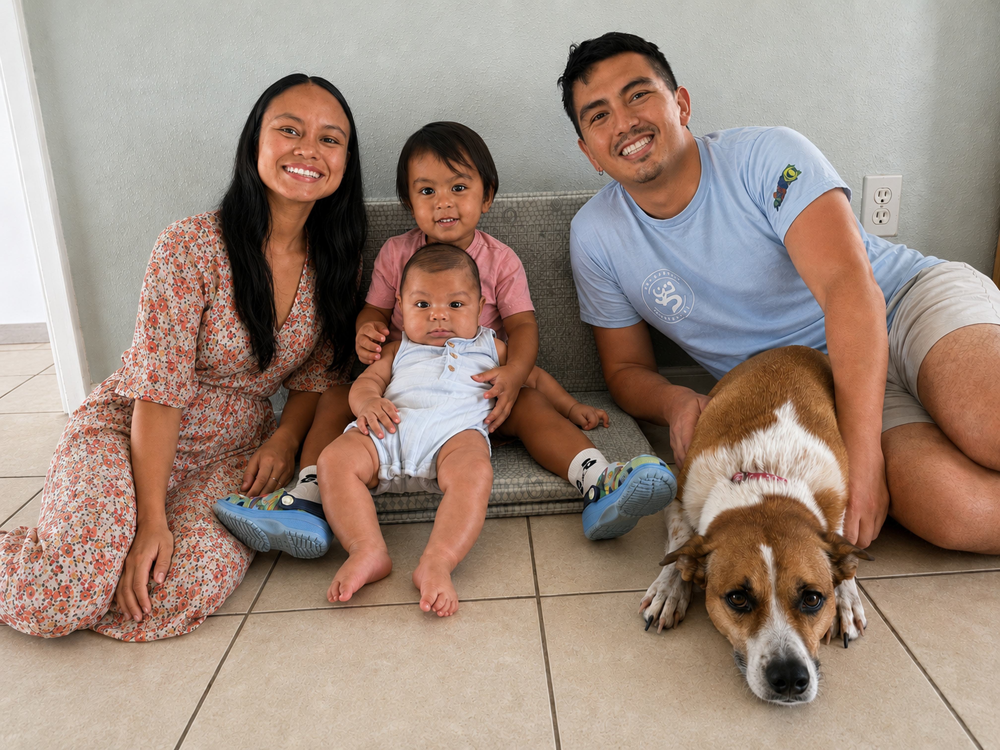

About Me
Background, family, and professional profile.
Longer Bio
I am a researcher and engineer working at the intersection of mechanical systems, applied mathematics, and data science. My current work explores how optimization and machine learning can improve engineering design and decision-making, especially in settings where experiments are expensive and uncertainty is unavoidable.
Beyond research, I care deeply about teaching and mentoring. I enjoy helping students move from theory to implementation by building clear, reproducible workflows and computational intuition.
Outside academics, I am a husband and father, and I value the perspective and balance that family brings to my work.
Family
